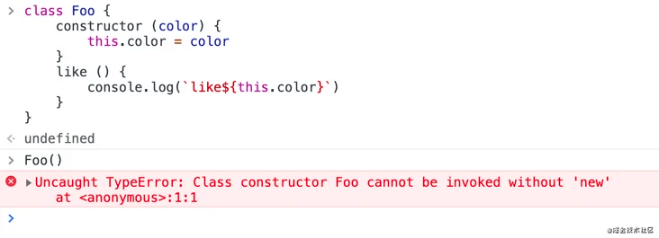
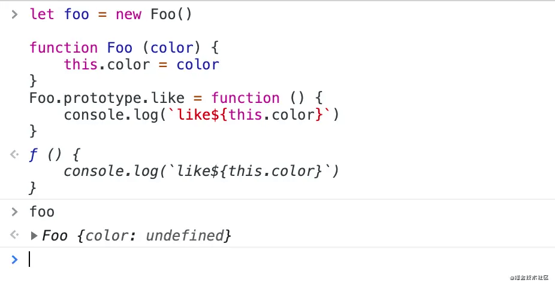
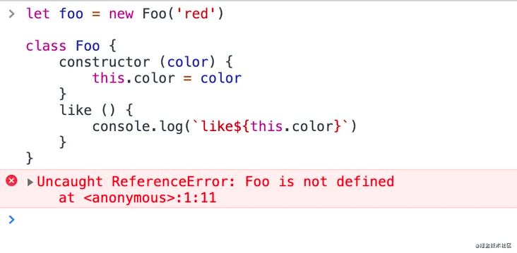

es5 中的类和es6中的class有什么区别？
参考答案
在es5中主要是通过构造函数方式和原型方式来定义一个类，在es6中我们可以通过class来定义类。
一、class类必须new调用，不能直接执行。

class类执行的话会报错，而es5中的类和普通函数并没有本质区别，执行肯定是ok的。
二、class类不存在变量提升


图2报错，说明class方式没有把类的定义提升到顶部。
三、class类无法遍历它实例原型链上的属性和方法
function Foo (color) {
this.color = color
}
Foo.prototype.like = function () {
console.log(`like${this.color}`)
}
let foo = new Foo()
for (let key in foo) {
// 原型上的like也被打印出来了
console.log(key) // color、like
}class Foo {
constructor (color) {
this.color = color
}
like () {
console.log(`like${this.color}`)
}
}
let foo = new Foo('red')
for (let key in foo) {
// 只打印一个color,没有打印原型链上的like
console.log(key) // color
}四、new.target属性
es6为new命令引入了一个new.target属性，它会返回new命令作用于的那个构造函数。如果不是通过new调用或Reflect.construct()调用的，new.target会返回undefined
function Person(name) {
if (new.target === Person) {
this.name = name;
} else {
throw new Error('必须使用 new 命令生成实例');
}
}
let obj = {}
Person.call(obj, 'red') // 此时使用非new的调用方式就会报错五、class类有static静态方法
static静态方法只能通过类调用，不会出现在实例上；另外如果静态方法包含 this 关键字，这个 this 指的是类，而不是实例。static声明的静态属性和方法可以被子类继承，但不能被子类实例继承。
class Foo {
static bar() {
this.baz(); // 此处的this指向类
}
static baz() {
console.log('hello'); // 不会出现在实例中
}
baz() {
console.log('world');
}
}
Foo.bar() // helloES5 vs ES6 类
ES5
- 使用构造函数和
prototype来模拟类。 - 继承通过原型链或对象冒充实现。
- 没有专门的静态方法和属性的语法。
- 类（实际上是构造函数）可以像普通函数一样被调用（尽管不推荐）。
ES6
- 引入
class关键字，使类的定义更加直观。 - 使用
constructor方法定义构造函数。 - 使用
static关键字定义静态方法和属性。 - 继承通过
extends关键字和super调用实现。 - 类的定义必须使用
new关键字来实例化。 - 类的内部方法（包括构造函数）自动添加到类的
prototype上，但语法更简洁。
简而言之，ES6的类语法提供了更直观、面向对象的方式来定义和使用类，而ES5则需要通过构造函数和原型链来模拟这些特性。